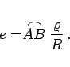
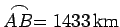
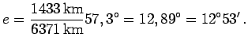

Inhalt Index DeskTop Bronstein

 Geometrie Sphärische Trigonometrie Grundbegriffe der Geometrie auf der Kugel Kurven, Bogen und Winkel auf der Kugel
Geometrie Sphärische Trigonometrie Grundbegriffe der Geometrie auf der Kugel Kurven, Bogen und Winkel auf der Kugel


Der sphärische Abstand zweier Punkte kann im Längenmaß oder im Winkelmaß ausgedrückt werden.
|  | (3.179b) |
Dabei ist e der in Grad und arc e der in Radiant gemessene Winkel (s. Bogenmaß). Für den Umrechnungsfaktor  gilt
gilt
Die Angaben im Längen- oder Winkelmaß sind gleichwertig, aber in der sphärischen Trigonometrie werden die sphärischen Abstände in der Regel im Winkelmaß angegeben.
| Beispiel B |
|
Der sphärische Abstand zwischen Dresden und St. Petersburg beträgt  oder  |